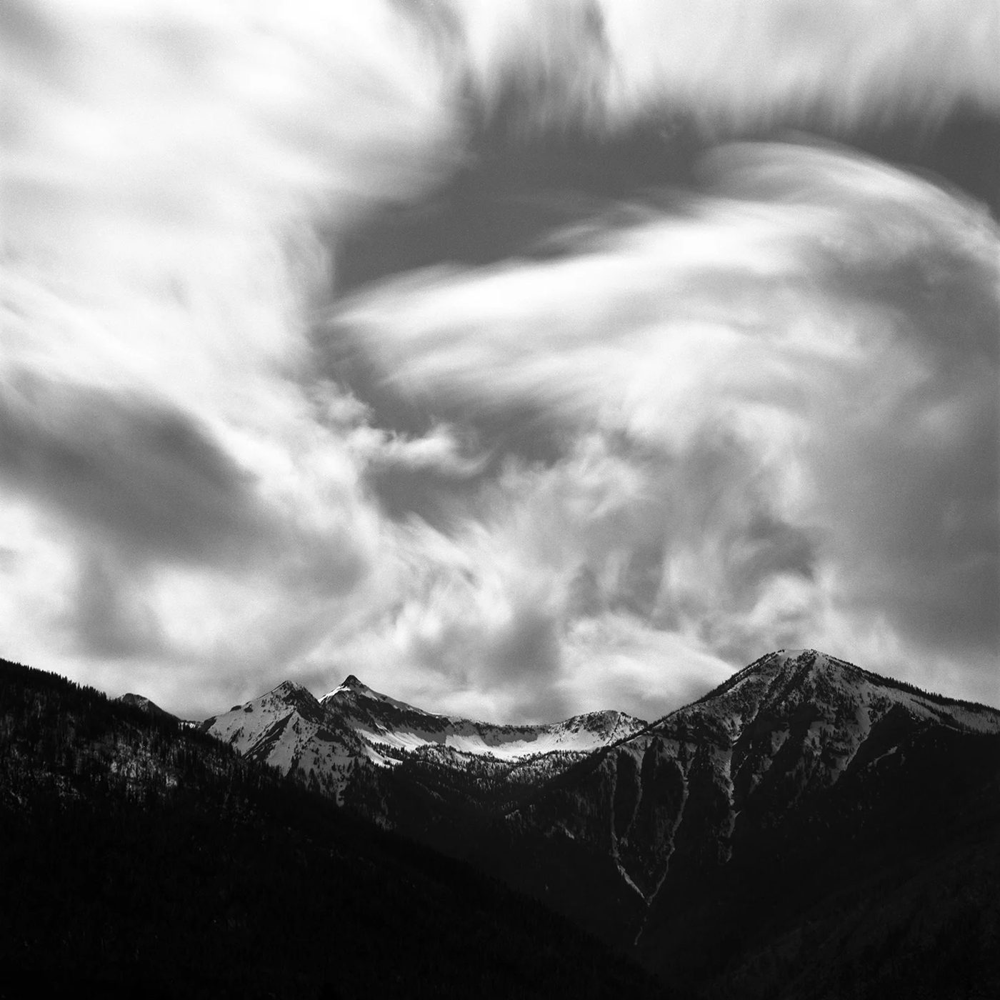
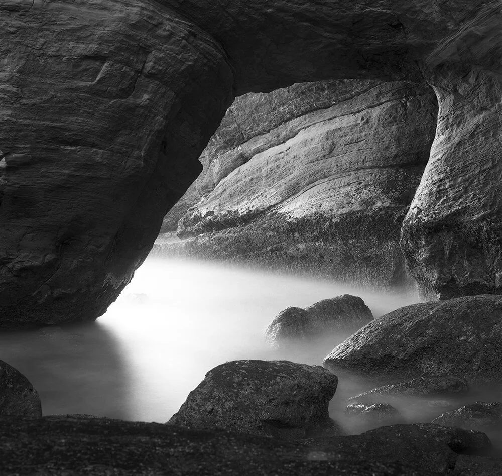
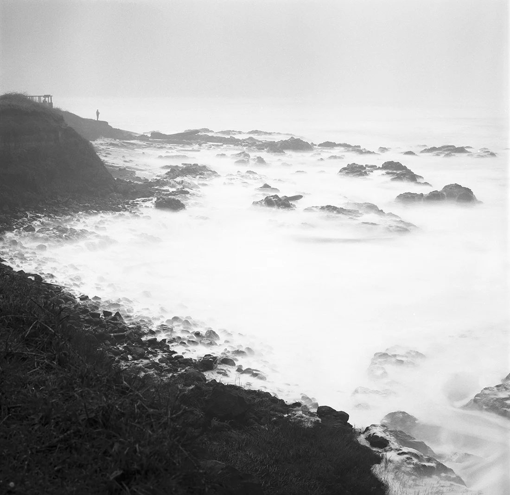

长曝胶卷要不要补偿？Acros 不用管，HP5 得翻好几倍
长曝最容易踩的坑，不是对焦、也不是手抖——是胶卷本身会「越拍越暗」。而且不同卷之间的差距大得离谱：同一张夜景，Acros 拍 2 分钟就够，HP5+ 得拍到 8.8 分钟。
一、先说清楚：为什么会「越拍越暗」
平时我们靠一条规律吃饭：光圈开大一档、快门快一档，曝光量不变——这就是「互易律」。它在日常快门速度下成立。
但到了极暗的光线下（或者极短的曝光下），这条律就失效了：光真的照进来了，底片上却没形成等量的潜影。结果就是你明明按测光表拍了 60 秒，底片上只有 40 秒的量——这就是「倒易率失效」（reciprocity failure）。
两个容易被忽略的点：① 它不只是让你变暗，反差也会变（低照度下通常变得更平），彩色卷还会偏色；② 它跟你的光圈快门没关系，是胶卷的化学特性——所以你必须查你手上那一卷的数据，而不是记住一个通用倍数。
二、Acros II 是个例外：2 分钟内不用管
富士给 Acros II 的官方口径非常干脆（Blue Moon Camera 引富士说明）：
这就是 Acros 被叫「长曝神器」的原因，也是它前代 Acros 100 当年出名的看家本事。下面这两张就是它拍的——云和水都拉成了丝，而拍摄者不需要为倒易失效做额外计算：


三、其它卷：Ilford 给了一张因子表，配一个公式
伊尔福（Ilford）的做法最省事，官方那份 Reciprocity Failure Compensation 给每卷一个因子 P，然后：
修正后的曝光时间 = 测得时间 ^ 因子 P
把因子代进去算一遍，结果如下（右两列是按上面的公式算出来的）：
| 胶卷 | 因子 P | 测 10 秒 → | 测 60 秒 → |
|---|---|---|---|
| HP5 Plus | 1.31 | 20 秒 | 3.6 分钟 |
| FP4 Plus | 1.26 | 18 秒 | 2.9 分钟 |
| Delta 100 | 1.26 | 18 秒 | 2.9 分钟 |
| Delta 400 | 1.41 | 26 秒 | 5.4 分钟 |
| Delta 3200 | 1.33 | 21 秒 | 3.9 分钟 |
| XP2 Super | 1.31 | 20 秒 | 3.6 分钟 |
| Pan F Plus | 1.33 | 21 秒 | 3.9 分钟 |
| SFX 200 | 1.43 | 27 秒 | 5.8 分钟 |
| Ortho Plus 80 | 1.25 | 18 秒 | 2.8 分钟 |
| Kentmere 100 | 1.26 | 18 秒 | 2.9 分钟 |
| Kentmere 400 | 1.30 | 20 秒 | 3.4 分钟 |
⭐ 表里藏着一条反直觉的事：Delta 400 的因子（1.41）比 Delta 100（1.26）还高——也就是说，「换一卷高感光度就不用管倒易失效了」这个直觉是错的。高感卷不一定更耐长曝，得看具体配方。
再回到开头那个对比。同一张需要测光 120 秒的夜景，结果是这样：
同一张照片，最长的那卷要拍近八倍的时间。这就是为什么长曝选卷不是「随便拿一卷」。

四、柯达更省事：直接查表
柯达在自己那份 T-Max 100 技术资料（F-4016） 里，直接给了一张现成的表——不用算，查就行：
| 测光时间 | 补偿 | 实际拍到 |
|---|---|---|
| 1/10 秒 或更快 | 不用 | 按测光拍 |
| 1 秒 | +1/3 档 | 调大光圈 |
| 10 秒 | +1/2 档 | 15 秒 |
| 100 秒 | +1 档 | 200 秒 |
柯达官方在「特点」一栏里写得很直白：T-Max 100 的一项卖点就是长曝和短曝下的互易特性更好，比传统胶片需要更少的补偿（原文：Less compensation required than with conventional films）。
⭐ 把它和伊尔福放在一起看，差距就出来了。同样测光 100 秒，实际要拍的时间是：
都是 ISO 100 的细颗粒卷，同一张照片差了近一倍时间。所以「细颗粒 = 适合长曝」也不成立，还是得看具体那一卷的表。
五、实测里最容易踩的三个坑
六、给你的实操清单
七、一句话
长曝的功夫不在快门，在你有没有查过手上那一卷的脾气。
本站目前收录 39 卷黑白胶卷，规格、使用感受、参考价和实拍样片都在下面这几卷里——想拍长曝，从 Acros II 开始最省事。
查这几卷的规格与实拍样片
Acros II（2 分钟内不用补偿） T-Max 100（柯达同款高光控制） Tri-X 400（夜景常用） HP5 Plus（因子 P=1.31）
去胶卷库看看这几卷
「胶卷档案」是一个可搜索的胶卷资料库：每卷都有规格、特性、使用感受、参考价与实拍样片。搜品牌或型号就能直达。